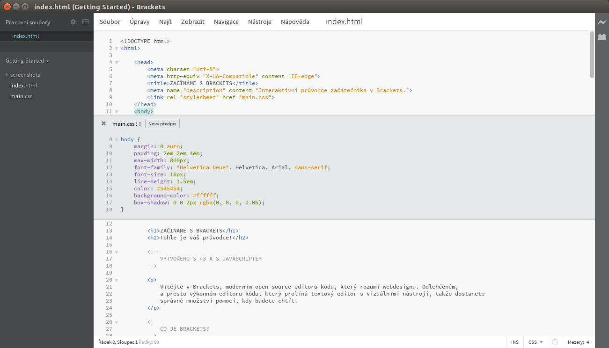

Vítejte v Brackets, moderním open-source editoru kódu, který rozumí webdesignu. Odlehčeném, a přesto výkonném editoru kódu, který prolíná textový editor s vizuálními nástroji, takže dostanete správné množství pomoci, kdy budete chtít.
Brackets je jiný druh editoru. Brackets obsahuje některé unikátní prvky, jako rychlou úpravu, živý náhled a další, které v jiných editorech pravděpodobně nenajdete. Navíc je Brackets napsán v JavaScriptu, HTML a CSS. To znamená, že mnoho z nás používajících Brackets má znalosti potřebné k úpravě nebo rozšíření editoru. My sami používáme Brackets neustále k vývoji Brackets. Čtěte dál, pokud se chcete dozvědět více o tom, jak používat některé klíčové funkce editoru.
Abyste mohli editovat vlastní kód pomocí Brackets, stačí jenom otevřít složku obsahující vaše soubory. Brackets považuje aktuálně otevřenou složku za „projekt“; funkce, jako např. nápovědy kódu, živý náhled nebo rychlou úpravu, pak používá jenom u souborů uvnitř aktuálně otevřené složky.
Jakmile budete připraveni odejít z tohoto ukázkového projektu a editovat vlastní kód, můžete použít rozbalovací nabídku v levém bočním panelu ke změně složek. Rozbalovací nabídka právě teď ukazuje „Getting Started“ - to je složka obsahující soubor, který právě teď prohlížíte. Klikněte na rozbalovací nabídku a vyberte „Otevřít složku…“ k otevření vaší vlastní složky. Rozbalovací nabídku můžete použít také později k přechodu zpátky do složek, které jste otevřeli dříve, včetně tohoto ukázkového projektu.Žádné další přepínání mezi dokumenty a ztrácení souvislostí. Když editujete HTML, použijte klávesovou zkratku Cmd/Ctrl + E k otevření rychle vloženého editoru, který zobrazí veškeré související CSS. Proveďte drobnou úpravu ve vašem CSS, stiskněte ESC a jste zpátky v editaci HTML, nebo prostě nechte CSS předpisy otevřené, čímž se stanou součástí vašeho HTML editoru. Pokud stisknete ESC mimo rychle vložený editor, skryjí se tyto editory všechny. Rychlá úprava najde také předpisy definované v LESS a SCSS souborech, včetně těch vnořených.
Chcete to vidět v akci? Umístěte kurzor na značku výše a stiskněte Cmd/Ctrl + E. Pod danou značkou by se měla objevit rychlá úprava CSS, zobrazující související CSS předpis. Rychlá úprava funguje také v atributech class a id. Stejně tak ji můžete využít ve vašich LESS a SCSS souborech. Stejným způsobem můžete vytvořit i předpisy nové. Klikněte na jednu ze značek výše a stiskněte Cmd/Ctrl + E. Zatím tu žádné předpisy nejsou, ale můžete kliknout na tlačítko Nový předpis, čímž přidáte nový předpis pro . Stejnou klávesovou zkratku můžete použít i k editaci jiných věcí - např. funkcí v JavaScriptu, barev nebo funkcí pro načasování animací - a pořád přidáváme další a další.
Vložené editory prozatím nemohou být vnořené, rychlou úpravu tedy můžete použít pouze pokud je kurzor uvnitř „plnohodnotného“ editoru.
Znáte ten tanec „uložitaobnovit“, který předvádíme řadu let? Takový ten, kdy provedete změny ve vašem editoru, uložíte je, přepnete na prohlížeč a obnovíte stránku, abyste nakonec viděli výsledek? S Brackets se tomuhle tanci můžete vyhnout.
Brackets otevře živé spojení s vaším prohlížečem a posílá změny v HTML a CSS během psaní! Možná už dnes děláte něco podobného s nástroji v prohlížečích, ale s Brackets není potřeba kopírovat výsledný kód a vkládat jej zpátky do editoru. Váš kód běží uvnitř prohlížeče, ale žije ve vašem editoru!
Díky Brackets jednoduše uvidíte, jak vaše změny v HTML a CSS ovlivní stránku. Pokud umístíte kurzor na CSS předpis, Brackets zvýrazní všechny zasažené prvky v prohlížeči. Podobně i při editaci HTML souboru Brackets zvýrazní odpovídající HTML prvky v prohlížeči.
Pokud máte nainstalovaný Google Chrome, můžete si to vyzkoušet sami. Klikněte na ikonu blesku v pravém horním rohu vašeho okna Brackets nebo stiskněte Cmd/Ctrl + Alt + P. Pokud je pro HTML dokumenty povolen živý náhled, veškeré připojené CSS dokumenty mohou být editovány v reálném čase. Ikona se změní z šedé na zlatou pokud Brackets naváže spojení s vaším prohlížečem. Nyní umístěte kurzor na značku výše. Všimněte si modrého zvýraznění, které se objeví v Google Chrome kolem obrázku. Dále použijte Cmd/Ctrl + E k otevření definovaných CSS předpisů. Zkuste změnit šířku rámečku z 10px na 20px nebo změnit barvu pozadí z „transparent“ na „hotpink“. Pokud běží Brackets a váš prohlížeč vedle sebe, uvidíte, jak se vaše změny okamžitě projeví ve vašem prohlížeči. Úžasné, že?Brackets v současnosti podporuje živý náhled pouze pro HTML a CSS. V aktuální verzi jsou změny v JavaScriptových souborech alespoň automaticky načteny, jakmile je uložíte. Aktuálně pracujeme právě na podpoře živého náhledu pro JavaScript. Živé náhledy jsou také možné jenom s prohlížečem Google Chrome, ale doufáme, že tuto funkci v budoucnu přineseme do všech hlavních prohlížečů.
Pro ty z vás, kteří si ještě nezapamatovali ekvivalenty barev pro HEX nebo RGB hodnoty, Brackets rychle a jednoduše zobrazí, jaká barva je právě používána. Jak v CSS, tak v HTML prostě najeďte na jakoukoliv barevnou hodnotu nebo barevný přechod a Brackets automaticky zobrazí náhled dané barvy nebo daného barevného přechodu. To samé platí pro obrázky: jednoduše najeďte na odkaz obrázku v editoru Brackets a ten zobrazí malý náhled daného obrázku.
Pokud si rychlý náhled chcete vyzkoušet sami, umístěte kurzor na značku výše v tomto dokumentu a stiskněte Cmd/Ctrl + E k otevření rychlého editoru CSS. Nyní jednoduše najeďte na kteroukoliv barevnou hodnotu v CSS. Také náhled barevných přechodů můžete vidět v akci otevřením rychlého editoru CSS na značce a najetím na kteroukoliv hodnotu background-image. K vyzkoušení náhledu obrázku umístěte kurzor na snímek obrazovky vložený výše v tomto dokumentu.Navíc ke všemu skvělému, co je zabudované do Brackets, ještě naše rozsáhlá a rostoucí komunita vývojářů doplňků vyvinula stovky doplňků přidávající další užitečné funkce. Pokud je tu něco, co potřebujete, ale Brackets to nenabízí, s největší pravděpodobností už pro to někdo vytvořil doplněk. K procházení nebo prohledání seznamu dostupných doplňků vyberte Soubor > Správce doplňků… a klikněte na záložku „Dostupné“. Až naleznete doplněk, který hledáte, prostě klikněte na tlačítko „Instalovat“ vedle něj.
Brackets je open-source projekt. Weboví vývojáři z celého světa se podílejí na vývoji a vylepšování editoru. Mnoho dalších vyvíjí doplňky, které rozšiřují možnosti Brackets. Dejte nám vědět, co si myslíte, sdílejte své nápady nebo se přímo podílejte na projektu.